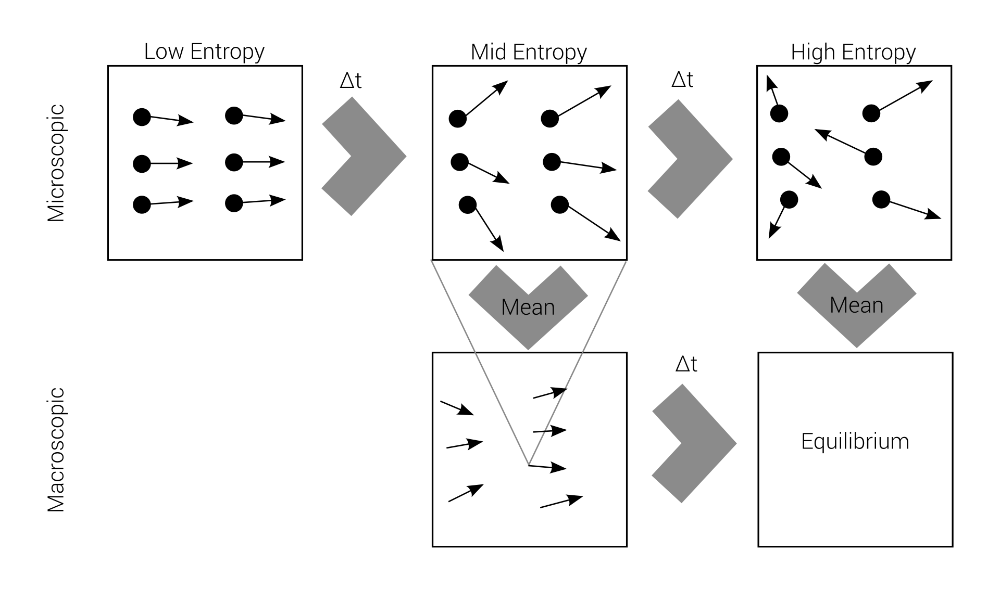
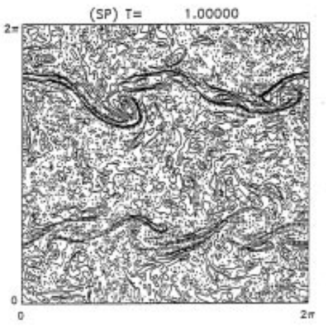
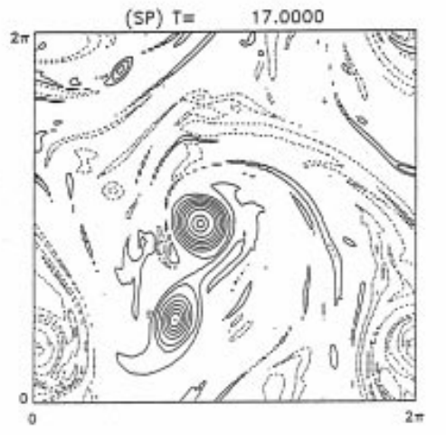
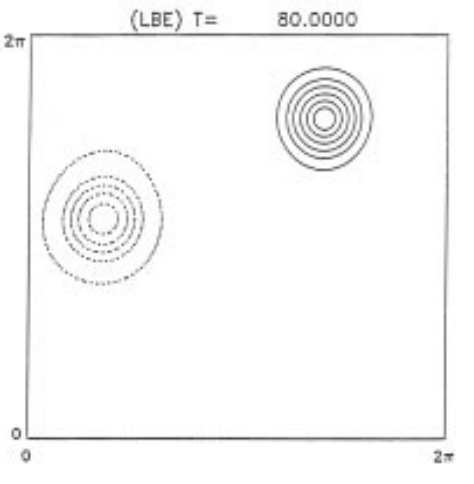

Lattice Boltzmann
Introduction
Every process occurring in nature proceeds in the sense in which the sum of the entropies of all bodies taking part in the process is increased
Second Law of Thermodynamics
But!
Boltzmann looked at the microscopic world...
Boltzmanns assumes
Most important microscopic interactions are
ideal / reversible / fully elastic
But...
That contradicts the 2nd law of Thermodynamics
Why?
Boltzmanns theory is accomplished!
Macro-irreversibility
Boltzmann's problem
macroscopic irreversibility
based on
microscopic reversibility
Reversibility example

Quiet a deal breaker!
We believe the macroscopic world to follow the
Rules of Thermodynamics
Loschmidt's paradox
This problem is called Loschmidt's paradox, but Boltzmann "solved" it.
It's all about probability
1. There are many microstates leading to one macrostate
It's all about probability
2. A lot of microstates have high entropy
It's all about probability
3. Very few of microstates have low entropy
It's all about probability
4. A lot of them lead to higher entropy
It's all about probability
5. Very few of them lead to lower entropy
Every process occurring in nature proceeds in the sense in which the sum of the entropies [...] is nearly always increased
Boltzmann's Second Law of Thermodynamics
What's right?
Boltzmann grounds his assumptions on molecular chaos
Contraposition
Loschmidt et al.:
chaos assumption is wrong
there is order on microscale
Boltzmann advantages
- Simplicity
- Ergodicity (mostly used in Simulated Annealing)
- Natural Parallelization
Ergodicity
Inspect one particle for a long time
$$\Leftrightarrow$$
Inspect multiple particles for a short time
Simulation of Microstructure
Microstructure
=
Particle Movement...
Particle Movement...
With microscale laws
Smoothed Particle Hydrodynamics (SPH)
Smoothed Particle Hydrodynamics (SPH)
|
Particles
|
Kernel / Neighborhood
|
|
|
|
Smoothed Particle Hydrodynamics (SPH)
|
Particles
|
Kernel / Neighborhood
|
|
Macroscopic Model
|
|
Smoothed Particle Hydrodynamics (SPH)
|
Particles
|
Kernel / Neighborhood
|
|
Macroscopic Model
|
Fluid / Gas
|
Smoothed Particle Hydrodynamics (SPH)
|
Particles
|
Kernel / Neighborhood
|
|
Macroscopic Model
|
Fluid / Gas
|
Lattice Gas
Works differently...
( Lattice Gas = Lattice Boltzmann prototype )
No Free Movement
Lattice Gas discretizes position and velocity drastically
The Lattices
|
2D Rectangular Lattice (D2Q4)
|
2D Hex Lattice (D2Q6)
|
|
3D Lattice (D2Q26)
|
 3D Neighbors
3D Neighbors
|
Discret Velocities
There are only a few possible velocities
2D Lattice Velocities
Exactly 4 velocities possible!
HPP Method (1973)
The first Lattice Gas prototype
Pauli Principle
HPP uses a kind of exclusion principle like for electrons in atoms
1 Particle per Direction
|
| $$\Leftrightarrow$$ |  |
Simple Propagation
Propagation Operator
| $\mathcal{P}($$)$ | = | | $\ldots$ |
- Conserves Mass
- Conserves Momentum
Collision Operator
| $\mathcal{C}($$)$ | = | | , |
$\mathcal{C}($$)$ | = | |
- Conserves mass
- Conserves momentum
Collision remark
It is unclear which particle is which after a collision.
But we assume Ergodicity!
The Whole HPP
$$S_{t+1} = E S_t = \mathcal{P}\mathcal{C} S_t$$
E = time evolution Operator
St = Lattice State at time t
HPP Problems
- Noise
- Conservation of Momentum per row / column
- No solution to Navier-Stokes
HPP Improvements
Several methods try to solve the diseases of HPP
FHP Method (1986)
Very similar to HPP but with a hex grid
FHP Hexgrid
6 different velocities
FHP Propagation
| $\mathcal{P}($$)$ | = | | $\ldots$ |
- Conserves Mass
- Conserves Momentum
FHP Collision
- Conserves mass
- Conserves momentum
FHP Collision
- Conserves mass
- Conserves momentum
FHP Collision
| $Pr(\mathcal{C}($$)$=$) = 0.5$ | |
|
- Conserves mass
- Conserves momentum
FHP Collision
| $Pr(\mathcal{C}($$)$=$) = 0.5$ | , |
$Pr(\mathcal{C}($$)$=$) = 0.5$ |
- Conserves mass
- Conserves momentum
Diseases of Lattice Gas
All LG have diseases like
- Spurious invariants
- Violation of Galilei invariance
- Noise
- ...
The worst
Collisions Operator determines macroscropic model
The worst
Finite (very limited!) number of possible collision Operators
The worst
Finite set of possible Macroscopic models
The worst
In General:
No possibility to simulate fluid with given viscosity
Lattice Boltzmann Equation (LBE)
$$n_i(\mathbf{x} + \mathbf{c}_i \Delta t, t_0+\Delta t) = n_i(\mathbf{x},t_0) + \Delta_i$$
Discrete "Master"-Equation for all Lattice methods
Lattice Boltzmann Equation (LBE)
$$n_i(\mathbf{x} + \mathbf{c}_i \Delta t, t_0+\Delta t) = n_i(\mathbf{x},t_0) + \Delta_i$$
Lattice Boltzmann Equation (LBE)
$$n_i(\mathbf{x} + \mathbf{c}_i \Delta t, t_0+\Delta t) = n_i(\mathbf{x},t_0) + \Delta_i$$
Lattice Boltzmann Equation (LBE)
$$n_i(\mathbf{x} + \mathbf{c}_i \Delta t, t_0+\Delta t) = n_i(\mathbf{x},t_0) + \Delta_i$$

Lattice Boltzmann Equation (LBE)
$$n_i(\mathbf{x} + \mathbf{c}_i \Delta t, t_0+\Delta t) = n_i(\mathbf{x},t_0) + \Delta_i$$
Lattice Boltzmann Equation (LBE)
$$n_i(\mathbf{x} + \mathbf{c}_i \Delta t, t_0+\Delta t) = n_i(\mathbf{x},t_0) + \Delta_i$$
Lattice Boltzmann Equation (LBE)
$$n_i(\mathbf{x} + \mathbf{c}_i \Delta t, t_0+\Delta t) = n_i(\mathbf{x},t_0) + \Delta_i$$
Advection
$$\frac{\partial f}{\partial t} + \mathbf v \nabla f = 0$$
Advection
$$\frac{\partial f}{\partial t} = - \mathbf v \nabla f$$
Function change over time
=
Function change in (–) velocity direction.
Advection
Directional Derivative = change of function in $\mathbf v$ direction.
Boltzmann Equation
$$\frac{\partial f}{\partial t} + \mathbf v \nabla f = Q = \left. \frac{\partial f}{\partial t} \right|_{Stoss}$$
Results in Navier-Stokes for certain Q
Lattice Boltzmann equation $$\approx$$ Discretization of
Boltzmann equation
Stoßzahlansatz
Boltzmann used the Stoßzahlansatz in his work for the collisions
Twoards Equilibrium
Equilibrium is the state in which all actions equal out
Stoßzahl Equilibrium
$$\left. \frac {\partial f} {\partial t} \right|_{Stoss} = 0$$
Collisions have no net effect!
Maxwell distribution
The maximum entropy equilibrium...
Collision term approximation
Usually $\left. \frac {\partial f} {\partial t} \right|_{Stoss}$ is aproximated
Important collisions
Navier-Stokes via LB requires a lot of collisions scenarios!
Collision Frequency will determine viscosity
Lattice Boltzmann method
At last a fully working LBM method without "diseases"
3 Parts of LBM
- A lattice: D2Q9 (multispeed)
- An equilibrium distribution: Maxwell
- Collision implementation/approximation: BGK
D2Q9
One cell with 9 velicoty types with continuous values
D2Q9
One cell with 9 velicoty types with continuous values
The middle one has zero speed
D2Q9
Continuous values are indicated by $F_i$
Marcoscopic Properties
- Density: $\rho(\mathbf x,t) = \sum_i F_i(\mathbf x, t)$
- Momentum density: $\mathbf j(\mathbf x,t) = \sum_i \mathbf c_i F_i$
LBM Propagation
$\mathcal P($ $)$ = , $\ldots$
Conserves mass and momentum
LBM Collision
$\mathcal C($ $)$ =
Conserves mass and momentum
LBM Collision
$\mathcal C($ $)$ =
Conserves mass and momentum
LBM Collision
$\mathcal C($ $)$ =
Conserves mass and momentum
LBM Collision
$\mathcal C($ $)$ =
Conserves mass and momentum
LBM Collision
$\mathcal C($ $)$ =
Conserves mass and momentum
That's bad!
Infinite choices!
No, that's good
Viscosity and macroscopic model can define collision Operator
D2Q9 in equilibrium
$$F_i(\mathbf x,t) = F_j(\mathbf x,t), \forall i,j \quad \text{?}$$
Nope!
We have a multispeed discretisation
Nope!
We want a Maxwell-Distribution, globally!
Nope!
We want a Maxwell-Distribution, globally!
Equilibrium Goal
Find local "equilibrium" "near"
$F_i(x,t)$
Near Equilibrium assumption
$$F_i(x,t) = W_i + f_i(x,t)$$
We are usually near a global equilibrium $W_i$
$$f_i(x,t) << W_i$$
Collisions $$\downarrow$$ Local Equilibrium
Transport + Collision $$\downarrow$$ Global Equilibrium
3 Steps
1. Calculate $W_i$
3 Steps
2. Calculate "Best" Local equilibrium
3 Steps
3. Use Collision approximation to reach global equilibrium
Global Equilibrium
Find discrete set of $W_i$ that are of Maxwell distribution
$W_i$ idea
Use velocity moments to create discrete version of Maxwell distribution
$$W_i \sim \rho_0 M$$
M is a Maxwell distribution with density function $m(\mathbf v)$
Zeroth Moment
$$\sum_i W_i = \rho_0$$
First Moment
$$\sum_i W_i c_j = 0$$
Second Moment
$$\sum_i W_i c_j c_k = \int \rho_0 m_B(\mathbf v) \mathbf v_j \mathbf v_k \; d\mathbf v$$
Global Equilibrium
\begin{align}
W_0 &= \frac{4}{9} \rho_0 \\
W_{1,3,5,7} &= \frac{1}{9} \rho_0 \\
W_{2,4,6,8} &= \frac{1}{36} \rho_0 \\
\end{align}
Local Equilibrium
Simply $W_i$ for other values of $\rho$ and $\mathbf v$?
No!
Local Equilibrium $\neq$ Maxwellian Distribution
Local Maximum Entropy
Maxwellian = global maximum entropy
Local Equilibrium should tend to global Equilbirium
4 Steps
1. Define Line of local Equilibria
4 Steps
2. Define Distance Function
(In Terms of Entropy)
4 Steps
3. Merge those two into one
4 Steps
4. Find Optimum
BGK approximation
The collisions... at last
BGK idea
1. Calculate distance to equilibrium
$$F_i^{(0)}(\mathbf x,t) - F_i(\mathbf x,t)$$
BGK idea
2. Estimate collision time \(\tau\)
BGK idea
3. Calculate collision frequency \(\omega = \frac{\Delta t}{\tau}\)
BGK idea
4. Change is proportional to frequency and distance
BGK approximation
$$\left. \frac{\partial f}{\partial t} \right|_{Stoss} \approx \omega \left[ F_i^{(0)}(\mathbf x,t) - F_i(\mathbf x,t)\right]$$
Full FBM (given $\rho, \mathbf v$ for every cell)
- Initialize Cells with $F_i^{(0)}(\rho,\mathbf v)$
- Handle collisions with BGK
- Propagate
- Calculate new $F_i^{(0)}$ values and go to 2.
How good is it?
Very good!
How good is it?
Very good!
Always conserves energy!
How good is it?
Very good!
Always conserves energy!
(no fake energy loss like macroscopic models)
Navier Stokes?
Yes!
Champan Enskog Multiscale analysis.
LBM with immersed boundary method
Thank you for your attention!
Questions?
Stoßzahlansatz
\begin{align*}
\left.{\frac {\partial f}{\partial t}}\right|_{{\mathrm {Stoss}}}=&\int W({\mathbf {v}}_{1},{\mathbf {v}}_{2},{\mathbf {v}}_{3},{\mathbf {v}}) \\& \left\{f({\mathbf {x}},{\mathbf {v}}_{1},t)f({\mathbf {x}},{\mathbf {v}}_{2},t) \right. - \\ & \left . f({\mathbf {x}},{\mathbf {v}}_{3},t)f({\mathbf {x}},{\mathbf {v}},t)\right\}{\text{d}}{\mathbf {v}}_{1}{\text{d}}{\mathbf {v}}_{2}{\text{d}}{\mathbf {v}}_{3}
\end{align*}
Stoßzahlansatz with HPP
We simply get
Stoßzahlansatz with HPP
We simply get
- $W($$,$$) = 1$
- $f($$) f($$) = 0$ for a cell (only to get the idea)
Stoßzahlansatz with HPP
We simply get
- $W($$,$$) = 1$
- $f($$) f($$) = 0$ for a cell
- $f($$) f($$) = 1$ for a cell
Stoßzahlansatz with HPP
We simply get
- $W($$,$$) = 1$
- $f($$) f($$) = 0$ for a cell
- $f($$) f($$) = 1$ for a cell
- $W($$,$$) = 0$
Stoßzahlansatz with FHP
We simply get
- $W($$,$$) = 0.5$
- $W($$,$$) = 0.5$
Further Reading
- Lattice-Gas Cellular Automata and Lattice Boltzmann Models- An Introduction, Wolf-Gardow, 2005
- An efficient immersed boundary-lattice Boltzmann method for the hydrodynamic interaction of elastic filaments, Tian et al, 2011
- Molecular dynamics of a classical lattice gas: Transport properties and time correlation functions, Hardy et al, 1976
Local Equilibrium
\begin{align}
F_i^{(0)} =& \frac{W_i}{\rho_0}\left (\rho + \frac{m}{k_B T} \mathbf c_i \mathbf j + \right. \\
&\left.\frac{m}{2 \rho k_B T} \left[ \frac{m}{k_B T} (\mathbf c_i \mathbf j)^2 - \mathbf j^2 \right]\right)
\end{align}
Viscosity
$$\nu = \frac{c^2}{3}\left(\tau - \frac{\Delta t}{2} \right)$$
BE with External Forces
$$\frac{\partial f}{\partial t} + v \nabla f + \frac{\mathbf K}{m}\frac{\partial f}{\partial \mathbf v} = Q$$
Comparison with Spectral Method

Comparison with Spectral Method
Comparison with Spectral Method

Comparison with Spectral Method
